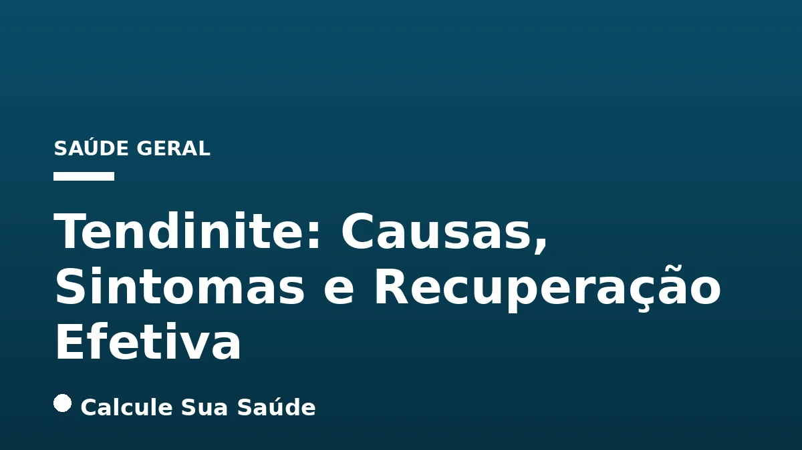

Aviso médico importante
Este conteúdo é educativo e informativo e não substitui a consulta, o diagnóstico ou o tratamento de um profissional de saúde. Em caso de sintomas, procure orientação médica.
Índice do Artigo
- 1. O que é Tendinite? Entendendo a Inflamação dos Tendões
- 2. Tendinite, Tendinopatia e Tenossinovite: Quais as Diferenças?
- 3. Classificação da Tendinite: Aguda vs. Crônica
- 4. Causas e Fatores de Risco da Tendinite: Por Que Ela Acontece?
- 5. Sintomas da Tendinite: Como Identificar o Problema
- 6. Diagnóstico da Tendinite: Da Avaliação Clínica aos Exames de Imagem
- 7. Prevenção da Tendinite: Estratégias para Proteger Seus Tendões
- 8. Tratamentos Conservadores: A Primeira Linha de Ação
- 9. Terapias Complementares e em Investigação
- 10. Quando a Cirurgia é Necessária? Opções de Tratamento Cirúrgico
- 11. Mitos Comuns sobre a Tendinite vs. A Ciência por Trás da Condição
- 12. Tendinite no Brasil: Dados Epidemiológicos e Impacto Social
- 13. Viver com Tendinite: Dicas para o Manejo Diário e Qualidade de Vida
- 14. Conclusão: A Importância da Abordagem Multidisciplinar
- 15. Perguntas frequentes
A tendinite, caracterizada pela inflamação ou irritação de um tendão, é uma das queixas musculoesqueléticas mais comuns que afetam a população brasileira e mundial. Essas estruturas fibrosas e espessas são vitais para a movimentação do corpo, pois conectam os músculos aos ossos. Quando um tendão é sobrecarregado ou lesionado, a dor e a limitação funcional podem impactar significativamente a qualidade de vida, desde atividades diárias simples até a prática esportiva.
No portal Calcule Sua Saúde, nosso compromisso é fornecer informações científicas e aprofundadas para que você compreenda melhor sua saúde. Este artigo abordará de forma completa a tendinite, diferenciando-a de condições correlatas como a tendinopatia e a tenossinovite, explorando suas causas mais frequentes, os sinais e sintomas a que se deve estar atento, e as abordagens diagnósticas. Mais importante, detalharemos as estratégias de prevenção e os tratamentos baseados em evidências que promovem uma recuperação eficaz e duradoura.
É fundamental lembrar que, embora este conteúdo seja elaborado com o máximo rigor científico, ele possui caráter exclusivamente educativo e não substitui a avaliação, o diagnóstico ou o tratamento médico individualizado. Em caso de suspeita de tendinite ou qualquer condição de saúde, procure sempre um profissional qualificado.
Em resumo
- A tendinite é a inflamação de um tendão, estrutura que conecta músculo ao osso, sendo a dor e a dificuldade de movimento seus principais sintomas.
- Diferencia-se de tendinopatia (termo mais amplo para condições do tendão) e tenossinovite (tendinite com inflamação da bainha do tendão).
- As causas mais comuns incluem uso excessivo, movimentos repetitivos, má postura, envelhecimento e certas doenças ou medicamentos.
- O diagnóstico é clínico, mas exames de imagem como ultrassom e ressonância podem ser usados para confirmar ou descartar outras condições.
- O tratamento envolve repouso, gelo, medicamentos (AINEs, corticoides em casos específicos) e, crucialmente, fisioterapia com exercícios excêntricos.
- A prevenção é essencial e inclui aquecimento, alongamento, fortalecimento muscular, ergonomia e progressão gradual em atividades físicas.
1. O que é Tendinite? Entendendo a Inflamação dos Tendões
A tendinite é uma condição de saúde caracterizada pela inflamação ou irritação de um tendão. Os tendões são estruturas anatômicas essenciais para o movimento do corpo humano: são cordões fibrosos e espessos, compostos principalmente por colágeno, que atuam como elos de ligação entre os músculos e os ossos. Sua função primordial é transmitir a força gerada pela contração muscular para os ossos, permitindo assim a movimentação das articulações.
Quando um tendão é submetido a estresse excessivo, movimentos repetitivos, traumas diretos ou outras condições adversas, ele pode desenvolver um processo inflamatório. Essa inflamação é a resposta natural do corpo a uma lesão ou irritação, visando proteger a área e iniciar o processo de reparo. No entanto, quando essa inflamação se torna crônica ou muito intensa, ela pode causar dor significativa, inchaço e limitação funcional.
A tendinite pode afetar qualquer tendão do corpo, mas é mais comum em regiões que sofrem maior sobrecarga ou que realizam movimentos repetitivos, como ombros (manguito rotador), cotovelos (epicondilite lateral ou medial, conhecida como cotovelo de tenista ou golfista), punhos (tendinite de De Quervain), joelhos (tendinite patelar) e tornozelos (tendinite de Aquiles). A compreensão de sua natureza é o primeiro passo para um manejo eficaz e para a recuperação da funcionalidade.
2. Tendinite, Tendinopatia e Tenossinovite: Quais as Diferenças?
Tendinite, Tendinopatia e Tenossinovite: Quais as Diferenças?
Embora frequentemente usados de forma intercambiável, os termos tendinite, tendinopatia e tenossinovite possuem significados distintos na medicina, refletindo diferentes condições que afetam os tendões. Compreender essas nuances é crucial para um diagnóstico preciso e um plano de tratamento adequado.
A tendinite, em sua definição clássica, refere-se à inflamação aguda de um tendão. Ela é caracterizada por um processo inflamatório ativo, geralmente acompanhado de dor, inchaço, calor e vermelhidão na área afetada. Historicamente, a tendinite era o termo mais utilizado para descrever a dor nos tendões.
No entanto, pesquisas mais recentes, especialmente a partir de 1999, revelaram que muitas condições dolorosas dos tendões, antes classificadas como tendinites, não apresentavam um processo inflamatório significativo. Em vez disso, a dor era frequentemente associada a um processo degenerativo do tecido tendinoso, com micro-rupturas e desorganização das fibras de colágeno. Para abranger essas condições, surgiu o termo tendinopatia.
A tendinopatia é, portanto, um termo mais abrangente que engloba qualquer condição dolorosa que afete o tendão, seja ela inflamatória (tendinite), degenerativa (tendinose, que é a degeneração sem inflamação significativa) ou uma combinação de ambas. Pode também incluir rupturas parciais ou completas do tendão.
Já a tenossinovite é uma condição específica que ocorre quando a tendinite é acompanhada pela inflamação da bainha sinovial, uma estrutura protetora que envolve alguns tendões, especialmente aqueles que atravessam articulações, como no punho e tornozelo. A bainha sinovial contém um líquido que lubrifica o tendão, facilitando seu deslizamento. Quando essa bainha inflama, a dor e a sensibilidade podem ser mais acentuadas, e pode haver uma sensação de crepitação ao mover o tendão.
| Condição | Definição Principal | Características | Implicações |
|---|---|---|---|
| Tendinite | Inflamação aguda do tendão. | Dor, inchaço, calor, vermelhidão. Geralmente associada a trauma ou uso excessivo recente. | Foco no controle da inflamação e alívio da dor. |
| Tendinopatia | Termo abrangente para qualquer condição dolorosa do tendão. | Pode incluir inflamação (tendinite), degeneração (tendinose), ou rupturas. | Exige diagnóstico mais detalhado para identificar a natureza do problema (inflamatório vs. degenerativo). |
| Tenossinovite | Inflamação do tendão E de sua bainha sinovial. | Dor, inchaço, sensibilidade, crepitação. Comum em tendões com bainha protetora (ex: punho). | Tratamento focado na inflamação do tendão e da bainha. |
3. Classificação da Tendinite: Aguda vs. Crônica
A tendinite pode ser classificada em duas categorias principais com base na sua duração e no modo de aparecimento dos sintomas: aguda e crônica. Essa distinção é fundamental para guiar a abordagem terapêutica, pois cada tipo exige estratégias de tratamento ligeiramente diferentes.
A tendinite aguda é caracterizada por um surgimento rápido e repentino dos sintomas. Geralmente, ela ocorre após um evento específico, como uma queda, um acidente, um esforço físico intenso e incomum, ou uma sobrecarga pontual. A dor é frequentemente intensa e localizada, acompanhada de sinais inflamatórios como inchaço, calor e vermelhidão. A resposta ao tratamento costuma ser mais rápida se a condição for abordada precocemente, com repouso e medidas anti-inflamatórias.
Por outro lado, a tendinite crônica desenvolve-se de forma mais lenta e insidiosa, com sintomas que persistem por semanas, meses ou até anos se não for tratada adequadamente. Ela é frequentemente resultado de microtraumas repetitivos, uso excessivo contínuo, má postura prolongada ou de uma tendinite aguda que não foi devidamente tratada e evoluiu para um processo degenerativo (tendinose). A dor na tendinite crônica pode ser mais constante, menos intensa em alguns momentos, mas persistente e limitante. O tratamento da tendinite crônica exige uma abordagem mais complexa e prolongada, focada não apenas na redução da dor, mas também na regeneração do tecido tendinoso e na correção dos fatores causadores.
4. Causas e Fatores de Risco da Tendinite: Por Que Ela Acontece?
Causas e Fatores de Risco da Tendinite: Por Que Ela Acontece?
A tendinite é uma condição multifatorial, o que significa que diversas causas e fatores de risco podem contribuir para o seu desenvolvimento. A compreensão desses elementos é crucial para a prevenção e para a elaboração de um plano de tratamento eficaz. A causa mais comum é o trauma local ou o uso excessivo, especialmente quando combinado com outros fatores predisponentes.
Esforços Excessivos ou Repetitivos
Movimentos repetitivos e esforços intensos são os gatilhos mais frequentes para a tendinite. Atividades que exigem a repetição constante de um mesmo movimento, seja no trabalho, em esportes ou em hobbies, podem sobrecarregar os tendões, levando à irritação e inflamação. Lesões agudas, traumas diretos ou atritos contínuos também podem desencadear o quadro.
Fatores Ocupacionais e Ergonomia
Muitas profissões envolvem movimentos repetitivos ou posturas inadequadas que aumentam o risco de tendinite. Professores, faxineiros, cozinheiros e trabalhadores de escritório (devido ao uso prolongado de teclado e mouse) são exemplos. Atividades que exigem elevação constante dos braços, como pintar ou carregar objetos, também predispõem à condição. A falta de ergonomia adequada no ambiente de trabalho amplifica significativamente o problema, exigindo pausas e ajustes posturais.
Envelhecimento
Com o avanço da idade, os tendões passam por um processo natural de desgaste. Eles se tornam menos elásticos, mais frágeis e, consequentemente, mais suscetíveis a lesões e inflamações. Essa degeneração relacionada à idade é um fator de risco importante para o desenvolvimento de tendinopatias crônicas.
Condições de Saúde Pré-existentes
Algumas doenças sistêmicas podem aumentar a vulnerabilidade dos tendões. Condições como diabetes tipo 2 e artrite reumatoide, por exemplo, podem alterar a estrutura e a capacidade de cicatrização dos tendões, tornando-os mais propensos à inflamação. Outras condições metabólicas e inflamatórias também podem influenciar.
Uso de Medicamentos Específicos
Certos medicamentos podem ter como efeito colateral o aumento do risco de tendinite ou mesmo de ruptura tendínea. Um exemplo notável são os antibióticos da classe das fluoroquinolonas, como o ciprofloxacino, que, embora eficazes contra infecções bacterianas, podem elevar as chances de problemas nos tendões, especialmente no tendão de Aquiles.
Fatores Biomecânicos e Posturais
A má postura, seja durante o trabalho, ao dormir ou em outras atividades diárias, pode gerar sobrecarga em tendões específicos. Da mesma forma, desequilíbrios biomecânicos, como tipos anormais de pé (pé plano ou cavo) ou alterações no ciclo da marcha, podem distribuir a carga de forma inadequada, levando a tendinopatias em joelhos, tornozelos e pés. A falta de alongamento e mobilidade também contribui para a rigidez e sobrecarga.
Condicionamento Físico Inadequado
O mau condicionamento físico, o sedentarismo e a falta de fortalecimento muscular adequado são fatores de risco significativos. Músculos fracos não conseguem absorver a carga de forma eficiente, transferindo o estresse para os tendões. A prática de exercícios de forma incorreta, sem orientação profissional ou com progressão muito rápida, também sobrecarrega os tendões. A atividade física regular e bem orientada é fundamental, mas o excesso ou a técnica errada são prejudiciais.
Sobrecarga de Peso e Obesidade
O excesso de peso corporal impõe uma carga adicional sobre as articulações e tendões, especialmente nos membros inferiores (joelhos, tornozelos e pés), aumentando o risco de inflamação e degeneração tendínea.
Estresse
Embora não seja uma causa direta, o estresse crônico pode influenciar a saúde geral do corpo, incluindo a resposta inflamatória e a percepção da dor, podendo ser um fator contribuinte para o agravamento ou persistência da tendinite.
5. Sintomas da Tendinite: Como Identificar o Problema
Os sintomas da tendinite podem variar consideravelmente dependendo da localização do tendão afetado, da gravidade da inflamação e do nível de comprometimento. No entanto, existem sinais e sintomas comuns que servem como alerta e indicam a necessidade de procurar avaliação médica.
Dor Localizada
A dor é o sintoma mais característico da tendinite. Geralmente descrita como uma pontada ou queimação, ela é localizada na região do tendão inflamado e tende a piorar significativamente com o movimento da articulação ou com a realização de atividades que exigem o uso do tendão. Em contrapartida, a dor costuma melhorar com o repouso. Em alguns casos, a dor pode irradiar para os músculos próximos ao tendão afetado.
Inchaço e Sensibilidade
A área ao redor do tendão inflamado pode apresentar inchaço (edema) e ser extremamente sensível ao toque. A palpação da região pode desencadear ou intensificar a dor, e a pele sobre o tendão pode parecer mais quente ou até mesmo avermelhada (hiperemia), indicando um processo inflamatório ativo.
Dificuldade e Limitação de Movimento
A inflamação e a dor podem causar uma limitação na amplitude de movimento da articulação afetada. O paciente pode sentir dificuldade em realizar tarefas simples, como levantar o braço, segurar objetos, caminhar ou girar o punho. Essa limitação pode ser acompanhada por uma sensação de rigidez, especialmente pela manhã ou após períodos de inatividade.
Crepitação ou Estalos
Em alguns tipos de tendinite, especialmente naqueles que envolvem a bainha do tendão (tenossinovite), pode-se sentir ou ouvir uma sensação de rangido, atrito ou estalos durante o movimento do tendão. Isso ocorre devido à inflamação da bainha e ao deslizamento irregular do tendão dentro dela.
Perda de Força Muscular
A dor e a inflamação podem levar a uma inibição da função muscular, resultando em uma diminuição da força no membro comprometido. Essa perda de força pode ser um indicativo de que o tendão está comprometido e não consegue transmitir a força muscular de forma eficiente.
Surgimento de um Caroço
Em casos mais crônicos ou com inflamação persistente, pode ocorrer o espessamento do tendão ou a formação de nódulos, que podem ser percebidos como um pequeno caroço na região afetada.
Complicações Graves
Se não tratada adequadamente, a tendinite pode evoluir para complicações mais sérias. Quadros graves e prolongados podem levar à atrofia muscular devido à falta de uso e à inibição da função. Em casos extremos, a degeneração do tendão pode enfraquecê-lo a ponto de ocorrer um rompimento completo, exigindo intervenção cirúrgica.
6. Diagnóstico da Tendinite: Da Avaliação Clínica aos Exames de Imagem
O diagnóstico da tendinite é um processo que combina a análise detalhada dos sintomas relatados pelo paciente (anamnese) com um exame físico minucioso. Em muitos casos, a história clínica e o exame físico são suficientes para estabelecer o diagnóstico.
Anamnese e Exame Físico
Durante a consulta, o profissional de saúde fará perguntas sobre o início dos sintomas, a intensidade da dor, os fatores que a pioram ou melhoram, as atividades que o paciente realiza (profissionais, esportivas, hobbies) e o histórico médico geral. Essa etapa é crucial para identificar possíveis causas e fatores de risco.
No exame físico, o médico irá inspecionar a área afetada em busca de inchaço, vermelhidão ou deformidades. Ele palpará o tendão para identificar pontos de sensibilidade e dor. Além disso, realizará manobras específicas, movendo a articulação em diferentes posições e pedindo ao paciente para realizar movimentos contra resistência, a fim de reproduzir a dor e avaliar a amplitude de movimento, a força muscular e a presença de crepitações. Uma boa propedêutica, que inclui anamnese e exame físico detalhados, é frequentemente considerada superior aos exames de imagem para o diagnóstico de tendinites crônicas refratárias ou múltiplas.
Exames de Imagem
Embora o diagnóstico seja primariamente clínico, exames de imagem podem ser solicitados para confirmar a tendinite, avaliar a extensão do dano tendíneo, descartar outras condições com sintomas semelhantes ou planejar intervenções mais complexas.
- Raios-X: Geralmente, os raios-X não mostram os tendões, mas podem ser úteis para identificar outras causas de dor articular, como esporões ósseos, fraturas ou sinais de artrite, que podem mimetizar ou coexistir com a tendinite.
- Ultrassonografia (US): A ultrassonografia é um exame de imagem muito útil para avaliar os tendões. Utiliza ondas sonoras para criar imagens em tempo real das estruturas internas, permitindo visualizar a inflamação, o espessamento do tendão, a presença de líquido na bainha (em casos de tenossinovite), micro-rupturas ou alterações degenerativas. É um exame dinâmico e de baixo custo.
- Ressonância Magnética (RM): A ressonância magnética é o exame de imagem mais detalhado para avaliar tecidos moles, incluindo tendões, músculos e ligamentos. Ela utiliza ondas de rádio e um campo magnético para gerar imagens de alta resolução da área afetada, sendo capaz de detectar inflamações sutis, degenerações, rupturas parciais ou completas do tendão e outras patologias associadas que podem não ser visíveis em outros exames. É frequentemente utilizada em casos de diagnóstico incerto, tendinites crônicas ou para planejamento cirúrgico.
7. Prevenção da Tendinite: Estratégias para Proteger Seus Tendões
A prevenção é a chave para evitar o desenvolvimento da tendinite e suas recorrências, especialmente para indivíduos que praticam esportes, realizam trabalhos repetitivos ou possuem fatores de risco. Adotar hábitos saudáveis e conscientes pode proteger seus tendões e manter a funcionalidade.
Aquecimento e Alongamento Adequados
Antes de qualquer atividade física, é fundamental realizar um aquecimento adequado para preparar os músculos e tendões para o esforço. O aquecimento aumenta a circulação sanguínea na região, melhora a elasticidade dos tecidos e reduz o risco de lesões. Além disso, a prática regular de alongamentos ajuda a manter a flexibilidade dos tendões e músculos, prevenindo a rigidez e a sobrecarga.
Moderação e Progressão Gradual do Esforço
Evitar esforços exagerados, sobrecarga e a aplicação de carga inadequada por períodos prolongados é crucial. Ao iniciar uma nova atividade física ou aumentar a intensidade de um treino, a progressão deve ser gradual. O corpo precisa de tempo para se adaptar às novas demandas. Identifique sinais de cansaço ou dor e reduza a intensidade das atividades para permitir a recuperação.
Ergonomia e Postura Correta
Ajustar fatores biomecânicos no ambiente de trabalho e nas atividades diárias é essencial. Utilize cadeiras ergonômicas, ajuste a altura de mesas e monitores, e posicione o teclado e o mouse de forma a manter os punhos neutros. Faça pausas regulares durante atividades prolongadas para movimentar-se e alongar. O uso de calçados adequados também é importante para a saúde dos tendões dos membros inferiores, contribuindo para uma boa postura e biomecânica geral, o que pode prevenir problemas como a dor lombar.
Fortalecimento Muscular Equilibrado
Músculos fortes e equilibrados são capazes de absorver melhor a carga e proteger os tendões do estresse excessivo. Um programa de fortalecimento muscular, com foco em todos os grupos musculares relevantes para as atividades realizadas, ajuda a estabilizar as articulações e a distribuir a força de forma mais eficiente. Consulte um profissional de educação física ou fisioterapeuta para um plano de exercícios personalizado.
Técnica Correta na Prática de Exercícios
Realizar atividades físicas com a técnica incorreta é um fator de risco significativo para a tendinite. Busque orientação profissional para aprender a executar os movimentos de forma adequada, minimizando a sobrecarga nos tendões. O uso de equipamento apropriado e em boas condições também é fundamental.
Hidratação e Nutrição Adequadas
Embora não sejam causas diretas, uma boa hidratação e uma dieta equilibrada contribuem para a saúde geral dos tecidos, incluindo os tendões, favorecendo sua elasticidade e capacidade de reparo.
8. Tratamentos Conservadores: A Primeira Linha de Ação
O tratamento da tendinite, em sua maioria, inicia-se com abordagens conservadoras, que visam reduzir a inflamação, aliviar a dor e promover a recuperação do tendão. A combinação de diferentes técnicas é frequentemente a mais eficaz.
Repouso e Imobilização
O repouso é um dos pilares iniciais do tratamento. Reduzir ou interromper as atividades que agravam a dor é essencial para permitir que o tendão se recupere. Em alguns casos, pode ser necessária a imobilização da área afetada com o uso de tipoias, talas ou gesso, especialmente em tendinites agudas ou mais graves. No entanto, o repouso inicial deve ser breve, pois o movimento controlado e gradual é importante para evitar a rigidez e promover o fortalecimento do tendão a longo prazo.
Crioterapia (Aplicação de Gelo)
A aplicação de gelo na região afetada é uma medida eficaz para reduzir o inchaço e a dor, especialmente nas fases iniciais da inflamação aguda. O gelo deve ser aplicado por cerca de 15 a 20 minutos, várias vezes ao dia, com uma barreira protetora para evitar queimaduras na pele. Contudo, o uso inadequado ou excessivo do gelo pode, em algumas situações, retardar o processo de recuperação, sendo importante seguir a orientação de um profissional.
Medicamentos
- Analgésicos: Medicamentos para alívio da dor, como paracetamol, podem ser prescritos para controlar o desconforto.
- Anti-inflamatórios Não Esteroides (AINEs): Fármacos como ibuprofeno ou naproxeno são comumente utilizados para reduzir a dor e a inflamação. Embora proporcionem alívio de curto prazo, o uso prolongado de AINEs deve ser evitado devido a potenciais efeitos adversos no sistema gastrointestinal, renal e cardiovascular.
- Infiltrações de Corticosteroides: Em alguns casos, o médico pode optar por injetar corticosteroides diretamente na área ao redor do tendão. Essas infiltrações podem proporcionar alívio rápido da dor e da inflamação, restaurando a capacidade funcional. No entanto, sua eficácia varia e o uso repetido ou prolongado de corticoides pode, paradoxalmente, enfraquecer e danificar o tecido tendinoso, aumentando o risco de ruptura.
Fisioterapia
A fisioterapia é uma etapa fundamental e, muitas vezes, a mais importante para a reabilitação da tendinite. O fisioterapeuta elaborará um plano de tratamento individualizado que pode incluir:
- Exercícios Terapêuticos: Uma revisão sistemática e metanálise indexada no PubMed indicou que exercícios excêntricos foram mais eficazes que outras formas de tratamento conservador no alívio da dor e recuperação funcional em pessoas com tendinopatia de Aquiles de porção média. Esses exercícios envolvem o alongamento do músculo enquanto ele se contrai, fortalecendo o tendão de forma controlada.
- Técnicas de Mobilização: Massagens terapêuticas, mobilização articular e alongamentos específicos para restaurar a flexibilidade e a amplitude de movimento.
- Eletroterapia: Uso de ultrassom terapêutico, TENS (Estimulação Elétrica Nervosa Transcutânea) e outras modalidades para reduzir a dor e a inflamação.
- Fortalecimento Muscular: Exercícios progressivos para fortalecer os músculos que suportam o tendão afetado, prevenindo futuras lesões.
- Reeducação Postural: Correção de padrões de movimento e postura inadequados para evitar a sobrecarga do tendão.
9. Terapias Complementares e em Investigação
Além dos tratamentos conservadores convencionais, diversas terapias complementares e abordagens em investigação têm sido exploradas para o manejo da tendinite, buscando otimizar o controle da dor e a regeneração tecidual.
Acupuntura e Agulhamento a Seco (Dry Needling)
Acupuntura, uma prática da medicina tradicional chinesa, e o agulhamento a seco, uma técnica ocidental, podem ser associados ao tratamento convencional. Ambas envolvem a inserção de agulhas finas em pontos específicos do corpo ou em pontos-gatilho musculares para aliviar a dor, reduzir a tensão muscular e promover a circulação sanguínea. Embora os mecanismos exatos ainda estejam sob estudo, muitos pacientes relatam melhora significativa da dor e da função.
Terapias em Investigação e Nível de Evidência
Algumas terapias mais recentes ou menos estabelecidas estão sendo investigadas, e sua eficácia ainda se encontra em diferentes níveis de evidência na literatura científica. É importante discutir essas opções com um médico especialista, pois nem todas são amplamente recomendadas ou cobertas por planos de saúde.
- Injeção de Fatores de Crescimento (Concentrados Plaquetários - PRP): Esta terapia envolve a coleta de sangue do próprio paciente, que é então processado para concentrar as plaquetas (ricas em fatores de crescimento) e injetado na área do tendão lesionado. Acredita-se que os fatores de crescimento estimulem a cicatrização e a regeneração do tecido.
- Terapia por Ondas de Choque Extracorpóreas (TOCE): Utiliza ondas de choque de alta energia aplicadas na pele sobre o tendão afetado. Essa terapia pode promover a neovascularização (formação de novos vasos sanguíneos) e estimular a cicatrização, sendo mais comumente usada em tendinopatias crônicas, como a do tendão de Aquiles ou epicondilite lateral.
- Ablação por Radiofrequência: Um procedimento minimamente invasivo que utiliza energia de radiofrequência para remover o tecido tendíneo degenerado, estimulando a resposta de cicatrização do corpo.
- Tenotomia Percutânea: Envolve a realização de pequenas incisões no tendão com uma agulha para estimular a cicatrização e a remodelação do tecido.
- Proloterapia: Consiste na injeção de uma solução irritante (geralmente dextrose) na área do tendão ou ligamento lesionado para induzir uma resposta inflamatória controlada, que se espera que promova a cicatrização e o fortalecimento dos tecidos.
- Nitratos Tópicos: A aplicação de nitratos tópicos, como o trinitrato de glicerila, tem sido estudada por seu potencial efeito na estimulação da produção de colágeno e na melhora do fluxo sanguíneo local, auxiliando na recuperação tendínea.
É crucial ressaltar que a decisão de utilizar qualquer uma dessas terapias deve ser tomada em conjunto com um médico, após uma avaliação completa e considerando as evidências científicas disponíveis para cada caso específico.
10. Quando a Cirurgia é Necessária? Opções de Tratamento Cirúrgico
A cirurgia para tendinite é geralmente considerada como último recurso, reservada para casos graves e persistentes que não respondem ao tratamento conservador após um período prolongado, tipicamente vários meses. Ela também pode ser indispensável em situações de ruptura completa do tendão.
Indicações para Cirurgia
A decisão de optar pela cirurgia é cuidadosamente avaliada pelo médico, levando em conta a intensidade da dor, o grau de limitação funcional, a presença de rupturas tendíneas e a falha de outras abordagens terapêuticas. Recomenda-se, em geral, que a cirurgia não seja realizada antes de um período mínimo de três a seis meses de tratamento médico e fisioterapia intensivos e bem conduzidos.
As principais indicações incluem:
- Tendinite Crônica Refratária: Quando a dor e a inflamação persistem e incapacitam o paciente, mesmo após meses de fisioterapia, medicamentos e outras terapias conservadoras.
- Ruptura do Tendão: Em casos de ruptura parcial significativa ou ruptura completa do tendão, a cirurgia pode ser necessária para restaurar a integridade e a função do tendão.
- Compressão Nervosa Associada: Em algumas situações, a inflamação do tendão pode levar à compressão de nervos adjacentes, exigindo intervenção cirúrgica para aliviar a compressão.
Tipos de Procedimentos Cirúrgicos
Os procedimentos cirúrgicos variam de acordo com o tendão afetado e a natureza do problema:
- Desbridamento Tendíneo: Consiste na remoção de tecido degenerado, cicatricial ou inflamado do tendão, visando estimular a cicatrização de tecido saudável.
- Reparo de Ruptura Tendínea: Em casos de ruptura, o cirurgião sutura as extremidades do tendão rompido, restaurando sua continuidade. Em algumas situações, pode ser necessário o uso de enxertos de tendão de outras partes do corpo ou de doadores.
- Tenossinovitectomia: Este procedimento envolve a remoção da bainha sinovial inflamada que envolve o tendão. É frequentemente realizada em casos de tenossinovite crônica que não responde ao tratamento medicamentoso, especialmente na mão e punho, onde a inflamação da bainha pode causar dor e compressão.
- Liberação do Tendão: Em algumas condições, como a doença de De Quervain, pode ser necessário realizar uma pequena incisão na bainha do tendão para aliviar a pressão e permitir o deslizamento livre do tendão.
Após a cirurgia, um programa de reabilitação fisioterapêutica é essencial para restaurar a força, a flexibilidade e a função da área afetada, garantindo uma recuperação completa e minimizando o risco de complicações.
11. Mitos Comuns sobre a Tendinite vs. A Ciência por Trás da Condição
Mitos Comuns sobre a Tendinite vs. A Ciência por Trás da Condição
A tendinite, por ser uma condição tão prevalente, é frequentemente cercada por informações equivocadas e mitos que podem dificultar o tratamento adequado e a recuperação. É essencial desmistificar essas crenças para adotar abordagens baseadas em evidências.
| Mito Comum | O Que a Ciência Diz |
|---|---|
| 1. Tendinite desaparece sozinha. | Embora o repouso possa aliviar temporariamente os sintomas, a tendinite raramente se resolve completamente sem intervenção. O tratamento eficaz geralmente exige fisioterapia, mudanças ergonômicas e, em alguns casos, medicamentos ou procedimentos médicos. Ignorar a condição pode levar à cronicidade e a complicações mais sérias. |
| 2. Aplicar gelo é sempre a solução. | O gelo é muito útil para reduzir o inchaço e a dor na fase aguda da inflamação. No entanto, seu uso inadequado ou prolongado pode, em algumas situações, retardar o processo de recuperação, pois a inflamação é uma parte natural do processo de cura. A orientação profissional é crucial para determinar a melhor abordagem. |
| 3. A tendinite é causada apenas por esforços repetitivos. | Movimentos repetitivos são uma causa primária, mas a tendinite é multifatorial. Fatores como esforço excessivo, prática incorreta de exercícios, traumas, envelhecimento, doenças sistêmicas (como diabetes e artrite reumatoide), desequilíbrios hormonais e até a dieta podem contribuir significativamente. |
| 4. Anti-inflamatórios sempre resolvem a tendinite. | Medicamentos anti-inflamatórios (AINEs) proporcionam alívio de curto prazo da dor e da inflamação. Contudo, seu uso prolongado pode ter efeitos negativos no organismo e, no caso de corticoides, podem até danificar o tecido tendinoso. A automedicação apenas mascara os sintomas e não aborda a causa raiz, podendo levar a complicações como a ruptura do tendão. |
| 5. Massagem é um tratamento eficaz para tendinite. | A massagem pode ser benéfica na prevenção da tendinite, ajudando a relaxar a musculatura e melhorar a circulação. No entanto, quando a inflamação já está instalada, a massagem, especialmente se realizada com força excessiva ou movimentos bruscos, pode agravar o quadro, aumentando a dor e a inflamação. |
| 6. Dor no tendão sempre significa inflamação. | Até 1999, a dor no tendão era quase sempre atribuída à inflamação (tendinite). Pesquisas mais recentes, contudo, demonstraram que grande parte da dor crônica no tendão é causada por um processo degenerativo (tendinose), com ruptura de tecido e desorganização das fibras de colágeno, e pouca ou nenhuma inflamação ativa. Por isso, o termo "tendinopatia" é mais preciso em muitos casos. |
12. Tendinite no Brasil: Dados Epidemiológicos e Impacto Social
A tendinite representa um desafio significativo para a saúde pública no Brasil, sendo uma das queixas musculoesqueléticas mais comuns nos serviços de saúde. Sua prevalência impacta diretamente a qualidade de vida de milhões de brasileiros, afetando sua capacidade de trabalho e atividades diárias.
A Organização Mundial da Saúde (OMS) estima que uma em cada 100 pessoas em todo o mundo sofre com alguma forma de tendinite. No Brasil, embora a tendinite seja uma das principais causas de afastamento do trabalho, as estatísticas específicas sobre sua incidência são, infelizmente, deficientes. Os dados de tendinite ocupacional frequentemente se sobrepõem aos casos de acidentes típicos de trabalho, e há uma lacuna de informações específicas dos Ministérios do Trabalho, da Saúde ou da Previdência e Assistência Social sobre o número exato de pacientes, tempo de afastamento, índices de recuperação, quantidade de aposentadorias ou os gastos diretos e indiretos relacionados a esses distúrbios.
Apesar da falta de dados precisos, é perceptível que a incidência de tendinite tem crescido tanto no Brasil quanto globalmente. Parte desse aumento é atribuída às mudanças nos hábitos de vida e trabalho, como o uso excessivo e prolongado de computadores, smartphones e outros aparelhos eletrônicos. Esses dispositivos frequentemente levam a movimentos repetitivos e posturas inadequadas, resultando em sobrecarga nas articulações e tendões, especialmente nos punhos, dedos, cotovelos e ombros. A conscientização sobre os fatores de risco e a implementação de medidas preventivas são, portanto, cada vez mais urgentes para mitigar o impacto dessa condição na sociedade.
13. Viver com Tendinite: Dicas para o Manejo Diário e Qualidade de Vida
Para aqueles que convivem com a tendinite, seja ela aguda ou crônica, o manejo diário e a adaptação de hábitos são fundamentais para controlar os sintomas, prevenir recorrências e manter uma boa qualidade de vida. A adesão ao plano de tratamento e a adoção de um estilo de vida consciente são cruciais.
Adesão ao Tratamento e Fisioterapia
É vital seguir rigorosamente as orientações do médico e do fisioterapeuta. Isso inclui a medicação prescrita, os exercícios terapêuticos e as sessões de fisioterapia. A interrupção prematura do tratamento, mesmo com a melhora dos sintomas, pode levar à recorrência ou à cronicidade da condição. A fisioterapia, com seus exercícios de fortalecimento e alongamento, é a base para a recuperação funcional e a prevenção de futuras lesões.
Modificações no Estilo de Vida e Atividades
Identifique e modifique as atividades que desencadeiam ou agravam a dor. Se a tendinite estiver relacionada ao trabalho, converse com seu empregador sobre ajustes ergonômicos ou pausas mais frequentes. Se for devido a um esporte, revise sua técnica com um treinador e considere equipamentos de suporte, como órteses ou talas, se recomendado. A progressão gradual em qualquer atividade física é sempre a melhor abordagem.
Gerenciamento da Dor no Dia a Dia
Aprenda a gerenciar a dor com estratégias não farmacológicas, como a aplicação de gelo após atividades que possam sobrecarregar o tendão ou o uso de calor para relaxar a musculatura em fases não agudas. Técnicas de relaxamento e manejo do estresse, como a meditação, também podem ser úteis, pois o estresse pode influenciar a percepção da dor.
Nutrição e Hidratação
Uma dieta balanceada, rica em nutrientes e com boa hidratação, contribui para a saúde geral dos tecidos e para a capacidade de recuperação do corpo. Alimentos com propriedades anti-inflamatórias podem ser benéficos, mas sempre com orientação profissional.
Escute Seu Corpo
Aprenda a reconhecer os sinais de alerta do seu corpo. A dor é um indicativo de que algo não está certo. Não ignore a dor e evite "forçar" o tendão. Dar tempo para o corpo se recuperar é tão importante quanto o tratamento ativo. O descanso adequado e um sono de qualidade também são essenciais para a recuperação e regeneração tecidual.
14. Conclusão: A Importância da Abordagem Multidisciplinar
A tendinite é uma condição complexa que, se não for adequadamente compreendida e tratada, pode levar a dor crônica, limitação funcional e um impacto significativo na qualidade de vida. Como vimos, ela pode ser aguda ou crônica, e suas causas são multifatoriais, abrangendo desde o uso excessivo e movimentos repetitivos até fatores como envelhecimento, doenças sistêmicas e má ergonomia.
A distinção entre tendinite, tendinopatia e tenossinovite é crucial para um diagnóstico preciso, que se baseia principalmente na anamnese e no exame físico, complementados por exames de imagem quando necessário. Contudo, o mais importante é a abordagem terapêutica, que deve ser abrangente e individualizada.
A recuperação eficaz da tendinite depende de uma combinação de repouso inicial, manejo da dor com medicamentos quando indicado, e, fundamentalmente, um programa de fisioterapia bem estruturado, com ênfase em exercícios excêntricos. A prevenção, por sua vez, exige a adoção de hábitos saudáveis, como aquecimento, alongamento, fortalecimento muscular, ergonomia adequada e progressão gradual nas atividades físicas.
É essencial desmistificar crenças populares e buscar sempre informações baseadas em evidências. A automedicação e a negligência dos sintomas podem agravar o quadro e levar a complicações sérias, como a ruptura do tendão. Portanto, ao menor sinal de dor persistente ou limitação de movimento, procure um profissional de saúde qualificado. Uma abordagem multidisciplinar, envolvendo médicos, fisioterapeutas e, se necessário, outros especialistas, é o caminho mais seguro para uma recuperação completa e duradoura, permitindo que você retome suas atividades com saúde e bem-estar.
15. Perguntas frequentes
Qual a diferença entre tendinite e tendinose?
Tendinite refere-se à inflamação aguda do tendão, com sinais como dor, inchaço e calor. Tendinose, por outro lado, é um termo mais atual que descreve a degeneração do tendão, com micro-rupturas e desorganização das fibras de colágeno, geralmente sem um processo inflamatório significativo, e é comum em casos crônicos.
A tendinite pode desaparecer sozinha com repouso?
Embora o repouso possa aliviar temporariamente os sintomas da tendinite, a condição raramente se resolve completamente sem tratamento adequado. O descanso não trata a inflamação subjacente ou a degeneração do tendão, podendo levar à cronicidade se não houver intervenção. É crucial buscar orientação médica e fisioterapêutica.
Quais são os principais fatores de risco para desenvolver tendinite?
Os principais fatores de risco incluem movimentos repetitivos, uso excessivo, má postura, envelhecimento natural dos tendões, doenças pré-existentes como diabetes e artrite reumatoide, uso de certos medicamentos (como fluoroquinolonas), mau condicionamento físico e falta de ergonomia no ambiente de trabalho.
Quais exames são feitos para diagnosticar a tendinite?
O diagnóstico é primariamente clínico, baseado na história do paciente e no exame físico realizado por um médico. Em alguns casos, exames de imagem como ultrassonografia e ressonância magnética podem ser solicitados para confirmar a inflamação, avaliar a extensão do dano ou descartar outras condições.
A fisioterapia é realmente eficaz para a tendinite?
Sim, a fisioterapia é fundamental e altamente eficaz no tratamento da tendinite. Ela visa reduzir a dor e a inflamação, restaurar a amplitude de movimento, fortalecer os músculos e tendões, e corrigir desequilíbrios biomecânicos. Exercícios excêntricos, em particular, têm demonstrado grande eficácia na recuperação funcional.
Quando a cirurgia é considerada para a tendinite?
A cirurgia é geralmente reservada para casos graves de tendinite crônica que não respondem ao tratamento conservador (médico e fisioterapêutico) após vários meses. Também é indicada em situações de ruptura parcial significativa ou completa do tendão, quando a função não pode ser restaurada de outra forma.
É possível prevenir a tendinite?
Sim, a prevenção é totalmente possível e crucial. Medidas incluem aquecimento e alongamento adequados antes da atividade física, progressão gradual do esforço, fortalecimento muscular equilibrado, correção da postura e ergonomia no trabalho, e evitar movimentos repetitivos e sobrecarga excessiva.
Anti-inflamatórios resolvem a tendinite de forma definitiva?
Anti-inflamatórios (AINEs) podem aliviar a dor e a inflamação no curto prazo, mas não resolvem a causa raiz da tendinite e não são uma solução definitiva. O uso prolongado pode ter efeitos colaterais. O tratamento completo deve abordar as causas e incluir fisioterapia para fortalecer o tendão e prevenir recorrências.
Leia também
Referências e Fontes
1. Vertex AI Search (Google Cloud). Tendinite: causas, sintomas, tipos e como tratar a inflamação nos tendões. Disponível em: vencerocancer.org.br
2. Instituto Salute. Desvendando Mitos Comuns sobre Tendinite e seu Tratamento - Instituto Salute. Disponível em: institutosalutesp.com.br
3. Mayo Clinic. Tendinitis. Disponível em: vertexaisearch.cloud.google.com
4. Sociedade Brasileira de Reumatologia. Tendinites e Bursites. Disponível em: reumatologia.org.br
5. MSD Manuals. Tendinite e Tenossinovite. Disponível em: msdmanuals.com
6. National Center for Biotechnology Information (NCBI). Tendinopathy. Disponível em: ncbi.nlm.nih.gov
7. Hospital Leforte. Tendinite: o que é, sintomas, causas e tratamento. Disponível em: vertexaisearch.cloud.google.com
8. Minha Vida. Tendinite. Disponível em: minhavida.com.br
9. SanarMed. Tendinites. Disponível em: sanarmed.com